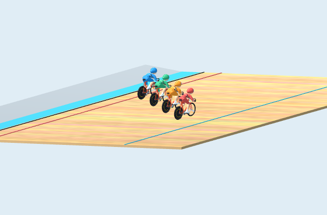
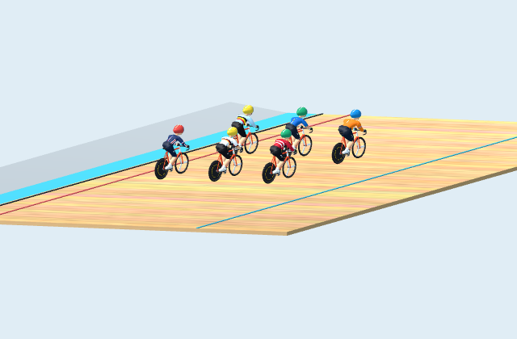

Free ride
Ride laps at your own pace with lap times and four coloured pacers.
Two kinds of training: power-based workouts with your trainer in ERG mode, and drills on the track.
In ERG training the trainer sets the power and you pedal. This needs a real trainer sending fresh power readings.
Five minutes of free warm-up, then the ramp starts at 100 W and rises by 20 W every minute. You stop when you can’t go on. Your FTP is 75% of your best 60 seconds and is saved to your player profile.
Available on v0.3. Warm up for five minutes, then ride for twenty minutes at the highest steady power you can sustain. ERG is off. Your FTP is 95% of your average measured power over those twenty minutes.
Build workouts in the editor or import a .zwo file. Filter your library by duration and by intensity as a percentage of your FTP.


All sessions are saved and can be reviewed later under Saved sessions.

Ride laps at your own pace with lap times and four coloured pacers.

Follow the motor pacer and build up speed together.

Use the height of the banking to carry more speed onto the line.

Gain a lap on a bunch riding at a fixed pace.

Practise 10 or 20 Madison exchanges with your teammate.
Rides can be saved as CSV, TCX or FIT. Uploading to Strava is possible but needs your own Strava configuration; see the manual.